Validating JIT Compilers via Compilation Space Exploration
This page was written by an AI model to give a high-level overview of the paper. Please check the paper for detail: ACM Digital Library.
Just-in-time (JIT) compilers are one of the most complex parts of a modern language virtual machine (LVM): HotSpot has C1 and C2, V8 has Turbofan and Maglev, and each interleaves bytecode interpretation with speculative, profile-guided compilation. That complexity makes JIT compilers a disproportionate source of bugs; the paper cites a report that about 45% of V8's CVEs after 2019 relate to JIT compilers. Testing them is hard for two compounding reasons: generating syntactically and semantically valid test programs is already difficult, and even a valid test rarely exercises the JIT compiler meaningfully, because an LVM only compiles code after a lengthy warm-up, and tiered compilation makes the most aggressive optimizing tiers even harder to reach.
Existing JIT validation techniques effectively treat the JIT compiler as a static, ahead-of-time compiler: they run a program, force a fixed, small number of compilation choices (typically "fully interpreted" versus "fully compiled"), and differentially test the outputs against other LVMs or other build configurations. This throws away almost all of the information in how an LVM actually behaves. In practice an LVM can compile, de-optimize back to the interpreter, and re-compile the same code many times over the life of one execution, at multiple program points and multiple optimization tiers, not just once at a method boundary. Bugs that only manifest along one of these many dynamic interleavings are invisible to approaches that look at only one or two fixed configurations.
The paper's key idea is to formalize all of these interleavings as the compilation space modulo LVM: the set of every JIT-trace (sequence of interpret/compile/de-optimize decisions) that an LVM could legally generate while running a program. Because the program's semantics do not depend on which JIT-trace is taken, every JIT-trace in this space must produce the same output. This gives an extremely strong test oracle that requires no second LVM or reference implementation: if any two JIT-traces of the same program in the same LVM disagree, the JIT compiler is buggy. The paper calls exhaustively enumerating and cross-checking this space Compilation Space Exploration (CSX).
Exploring the full compilation space directly would require either modifying each LVM's internals or fuzzing its compiler flags, both expensive and non-portable. Instead, the paper approximates CSX with JIT-Op Neutral Mutation (JoNM): a lightweight, LVM-agnostic, source-level mutation strategy that inserts or removes loops, method calls, and (in principle) uncommon traps, the same constructs an LVM's own profiler watches, to steer execution onto a different, but still semantics-preserving, point in the compilation space. Running the mutant and comparing its output against the unmutated seed realizes CSX's oracle without touching the LVM itself.
The authors implement JoNM twice: Artemis for Java bytecode and Apollo for JavaScript (built on top of Fuzzilli). Within three months, Artemis found 85 bugs across HotSpot, OpenJ9, and the Android Runtime (ART), with 53 confirmed or fixed and every single one a genuine JIT-compiler bug. Apollo, run for seven days against three major JavaScript engines, achieved comparable or better code coverage than Fuzzilli using markedly fewer samples and discovered four previously unknown mis-compilations in JavaScriptCore and SpiderMonkey.
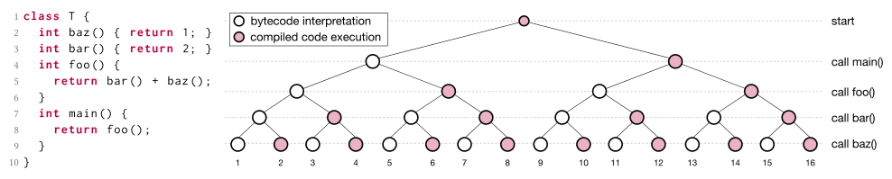
Key takeaways
- The paper defines the compilation space modulo LVM: all JIT-traces (interpret/compile/de-optimize sequences) an LVM could generate for a program, every one of which must produce the same output.
- Compilation Space Exploration (CSX) cross-validates pairs of JIT-traces of a single program on a single LVM, needing no reference implementation, unlike traditional differential testing across LVMs.
- JIT-Op Neutral Mutation (JoNM) approximates CSX at the source level by inserting or removing semantics-preserving loops, method calls, and (eventually) uncommon traps that are the very signals LVM profilers watch.
- Artemis (JVM) found 85 bugs across HotSpot, OpenJ9, and ART, 53 confirmed or fixed, all of them genuine JIT-compiler bugs, including mis-compilations that prior JVM fuzzers could not find without cross-LVM differential testing.
- Apollo (JavaScript, built on Fuzzilli) matched or exceeded Fuzzilli's code coverage with fewer samples and a similar crash count, while adding the ability to find 4 real mis-compilations in JSC and SM within a 7-day campaign.
From a compilation space to a mutation engine
How JIT compilation creates a space of equivalent choices, how the paper formalizes and explores that space, and how Artemis and Apollo implement it.
1 · Background: how an LVM decides what to compile
LVMs start by interpreting bytecode for fast startup, then incrementally JIT-compile "hot" code once profiling counters (method invocation counters, loop back-edge counters) cross a threshold. Method-JITs (HotSpot's C1, ART's OptimizingCompiler) compile whole methods; tracing-JITs (HotSpot's C2, V8's Turbofan) also compile individual hot loops via on-stack replacement (OSR), splicing compiled code in mid-method. JIT compilers often make speculative assumptions from profiled behavior (a branch is "never taken," a variable is always a given type); when an assumption is violated at runtime, the LVM hits an uncommon trap and de-optimizes back to the interpreter. Many LVMs also support tiered compilation, where hotter code gets progressively more aggressive (and slower-to-produce) optimization. The upshot: a single program execution can switch between interpretation and several compilation tiers many times, at many different points.
2 · Formalizing the compilation space
The paper quantifies "hotness" as temperature: given N compilation thresholds Z₁ ≤ ... ≤ Z_N partitioning a profiling counter's value range, a counter's temperature is the tier T_i whose range it falls in, and a method's temperature is the maximum temperature of any of its counters. The temperature vector for one invocation of a method records how its temperature changes during that call (for example [T0, T1, T0]: interpreted, then compiled, then de-optimized back). A full program run is a sequence of these vectors, one per method call, called a JIT-trace.
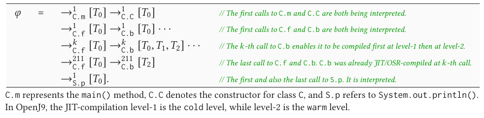
Every program has a default JIT-trace: whatever the LVM produces with default settings. The table above shows the default JIT-trace that OpenJ9 generates for the seed program later shown mis-compiling in Figure 2: most methods stay interpreted throughout, but one method (C.b()) gets compiled at the warm tier partway through the run. The compilation space modulo LVM, SLVM(P), is defined as the set of all JIT-traces φ that LVM can legally generate while running program P. Because an LVM can compile or de-optimize at many points, even a program with only n method calls can have Ω(2n) possible JIT-traces.
3 · Compilation Space Exploration (CSX) and why it's hard to realize directly
The oracle is simple: for any two JIT-traces φ1 ≠ φ2 in SLVM(P), running P under φ1 and under φ2 must produce the same output; any difference is a JIT-compiler bug. CSX is exhaustively walking this tree-shaped space (the root is the bootstrap call, each node a method call labeled by its temperature vector, each root-to-leaf path a JIT-trace) and cross-checking outputs. The paper names three exploration orders: ordered walk (complete but requires knowing each counter's full value domain), random walk (simple, incomplete, scales with time budget), and directed walk (targets a specific objective, such as new optimization passes, but needs a good objective function).
A literal realization, modifying each LVM to expose free control over interpretation/compilation decisions, is accurate but requires deep, LVM-specific engineering and conflicts with each LVM's internal assumptions. A more practical-looking alternative, randomly fuzzing an LVM's JIT-compiler command-line options, needs substantial manual understanding of each LVM's options, has limited reach, and (the authors report from a one-week experiment) did not surface anything interesting. Both motivate a lighter, portable approach.
4 · JIT-Op Neutral Mutation (JoNM)
JoNM approximates CSX via a random walk performed entirely at the source level. It exploits the same mechanism JIT compilers themselves use: profile-guided speculative compilation. Inserting or removing loops or method calls changes a method's temperature and hence changes which JIT-trace the LVM takes; manipulating cold paths can trigger de-optimization. The one hard requirement is that every mutation be neutral, i.e., semantics-preserving, so cross-checking the mutant's output against the seed's output remains a valid oracle. Given a seed program P, JoNM derives a set of mutants P′, each engineered to follow a different JIT-trace than P while provably preserving P's output; a bug is reported whenever LVM(P) ≠ LVM(P′).
5 · The four mutators
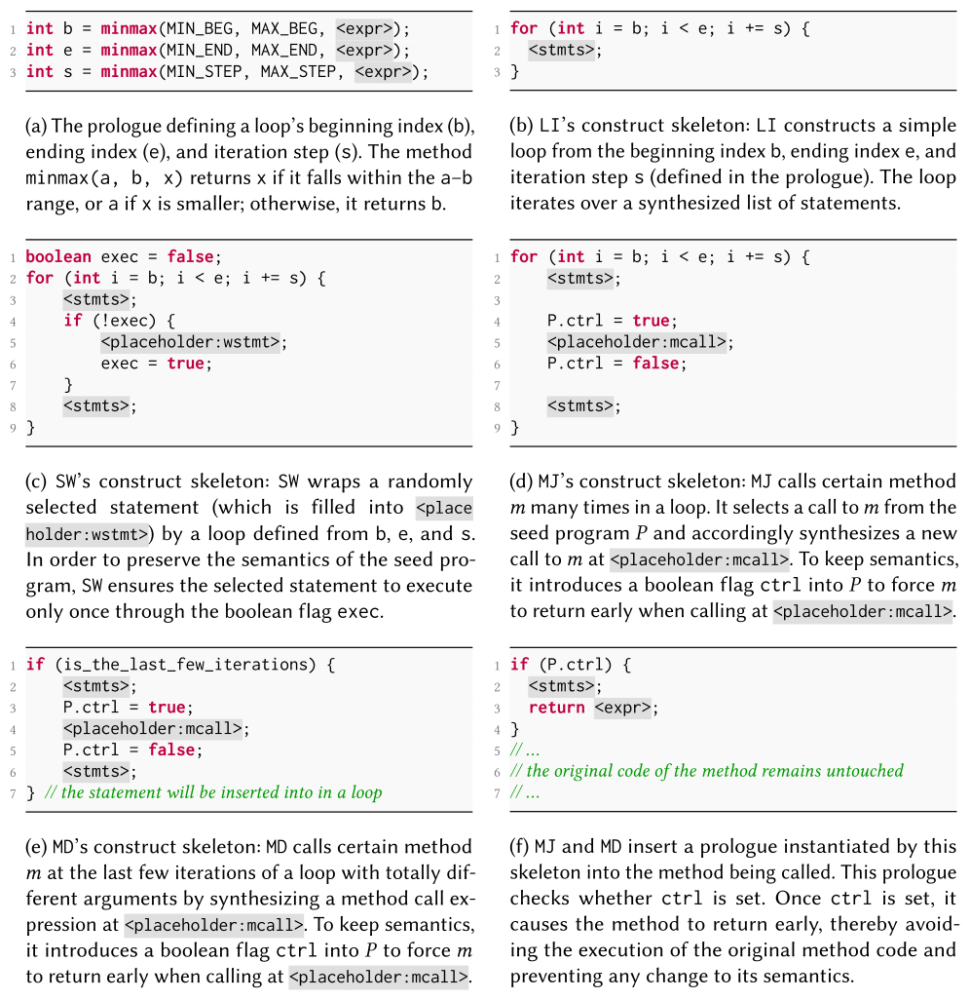
Artemis and Apollo both implement four mutators that insert a synthesized program construct L at a chosen program point ρ inside a method m:
- Loop Inserter (LI). Inserts a bare neutral loop at ρ, heating m toward OSR compilation (and possibly a later de-optimization when the loop exits).
- Statement Wrapper (SW). Wraps the statement immediately following ρ inside a synthesized loop (guarded by a control flag so the wrapped statement still executes exactly once). Unlike LI, this makes the wrapped statement and the loop get JIT-compiled together, exercising different flow optimizations in tracing-JITs.
- Method Invocator for JIT (MJ). Synthesizes extra, argument-matching calls to m (guarded so they early-return without executing m's real body) before a real call k, forcing the LVM to JIT-compile m before k executes, so k runs against compiled code.
- Method Invocator for DeOpt (MD). Similar to MJ but synthesizes calls with mismatched argument types to force de-optimization of an already-compiled m, timed via a loop so the real call k still runs afterward against the (now de-optimized) m.
Each mutator's construct is built from a skeleton with expression holes (<expr>), statement holes (<stmts>), and mutator-specific placeholders (<placeholder:*>) that get filled with code taken from the seed itself.
6 · Synthesizing neutral constructs
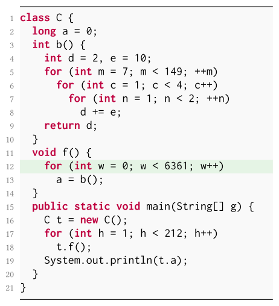
Construct synthesis follows "programming by sketch": fill each hole in a mutator's skeleton using the variables available at the chosen program point. Expression holes are filled with fresh random values, reused variables of a matching type, newly constructed arrays, or default-constructed objects; statement holes are filled from a corpus of real statement skeletons mined from the LVM's own test suites. Any reused variable is saved before the synthesized construct runs and restored afterward, so the construct cannot leak side effects into the rest of the program. The figure above shows a resulting mutant: Artemis inserted a loop into OpenJ9 Issue-15306's seed program, triggering extra JIT and OSR compilations while keeping the program's expected output (4,262) unchanged, yet OpenJ9 mis-compiled it to 1,422, a confirmed blocker bug.
7 · Artemis: implementation for JVMs
Artemis implements LI, SW, and MJ (not MD) for Java, in about 3,000 lines of Java and 2,000 lines of Python, using the Spoon framework to parse and transform Java source. It seeds from JavaFuzzer, a random Java program generator, chosen because its outputs reduce well with Perses and C-Reduce. It mines 7,823 statement skeletons from the test suites of HotSpot, OpenJ9, and ART. After all four mutators finish mutating, Artemis renames variables to avoid conflicts, disables stdout/stderr during the synthesized construct's execution, and catches/discards any exceptions it might throw, to avoid the construct itself breaking neutrality.
8 · Apollo: implementation for JavaScript engines
Apollo extends Fuzzilli (adding ~1,200 lines of Swift) with a new fuzz engine, hybrjdon, implementing all four mutators (LI, SW, MJ, MD) on top of Fuzzilli's FuzzIL intermediate language. Because Fuzzilli-generated programs produce no output by default, Apollo inserts a checksum variable with update operations before mutating, and reports a mis-compilation whenever a mutant's final checksum differs from the seed's. JavaScript's dynamic types and first-class functions make neutrality much harder to guarantee than in Java, so Apollo adds several conservative defenses: type tracing (to avoid implicit infinite recursion and type coercion), static analysis of scope/context and def-use relations, a bounded checksum (restricted operand range and operator set, a per-function update-count cap), several minor restrictions on advanced Fuzzilli features, and a fallback strategy that pre-executes a candidate sample three times and only accepts it for mutation if its output is consistent across all three runs. Results from these implementations are discussed in the Evaluation tab.
Evaluation
What the paper measures for Artemis (JVMs) and Apollo (JS engines), its key tables and figures in the paper's order, and what each shows.
Artemis was evaluated against the latest trunks of HotSpot, OpenJ9, and ART on x86_64 Linux, with background compilation disabled and a 1 GiB Java heap, seeded by JavaFuzzer-generated programs reduced with Perses and C-Reduce. A separate 7-day comparative study against a traditional (default-vs-fully-compiled) approach ran on an AMD Ryzen Threadripper 3990X using 16 of 64 cores, targeting OpenJ9 (JDK 11). Apollo was evaluated against the latest trunks of seven JavaScript engines (V8, JavaScriptCore, SpiderMonkey, QuickJS, JerryScript, Duktape, Nginx JavaScript) targeting ECMAScript 2015, comparing Fuzzilli's default mutation engine, an intermediate jitmut baseline (JIT-op-based but not semantics-preserving), and Apollo's hybrjdon engine, two instances of each on 24 CPUs for 24 hours (1,008 CPU days total), plus a separate 7-day, 64-CPU campaign per major engine to look for real mis-compilations.
| What | Value in the paper |
|---|---|
| Platform | x86_64 Linux; latest trunk builds of each LVM; Threadripper 3990X (16/64 cores) for the comparative study |
| Workloads / seeds | JavaFuzzer-generated Java programs (Artemis); Fuzzilli-generated JavaScript programs with an inserted checksum variable (Apollo) |
| Baselines | Traditional approach (default vs. fully-compiled JIT-trace, -Xjit:count=0); jitmut; Fuzzilli's default mutation engine |
| Metrics | Number and type of bugs found, confirmation/fix status, affected JIT components, branch coverage, number of interesting samples, throughput, execution cost |
Artemis found 85 JIT-compiler bugs, over 60% confirmed or fixed, spread across many compiler components
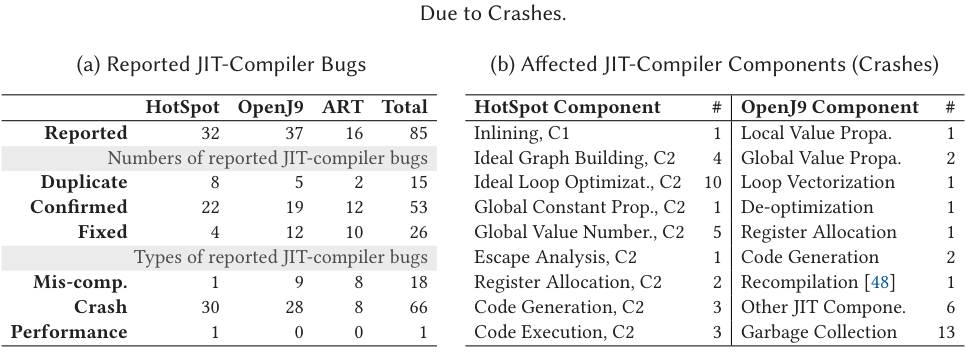
What it shows. Table 2a breaks 85 reported bugs down by JVM (32 HotSpot, 37 OpenJ9, 16 ART) and status (53 confirmed or fixed, 26 of those fixed, 15 duplicates of other reports) and by type (18 mis-compilations, 66 crashes, 1 performance issue). Table 2b lists, for crashes only, the specific JIT-compiler component each one affects: in HotSpot the largest groups are Ideal Loop Optimization in C2 (10), Global Value Numbering in C2 (5), and Ideal Graph Building in C2 (4); in OpenJ9 the single largest group is crashes surfacing inside the garbage collector (13), traced back to the JIT compiler corrupting heap memory.
What to take from it. Every one of the 85 bugs is a genuine JIT-compiler bug, none appear under pure interpretation, which the paper attributes to exploring JIT-traces rather than a fixed compilation choice. 12 of the OpenJ9 bugs were marked blocker (release-blocking), 10 HotSpot bugs were marked at least P3, and 13 OpenJ9 bugs were long-latent across four or more major releases. ART was excluded from the component-level crash breakdown because it had too few (≤10) crashes for the analysis to be reliable.
CSX surfaces far more discrepancies than comparing a default trace against a fully-compiled trace
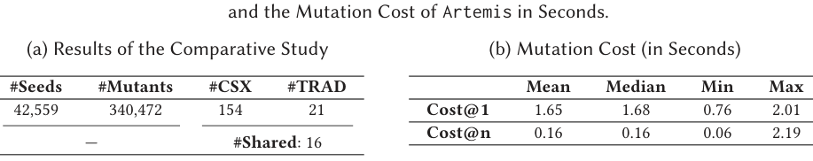
What it shows. Table 3a reports a 7-day comparative study on OpenJ9: 42,559 JavaFuzzer seeds and 340,472 Artemis mutations were generated; Artemis (CSX) triggered output discrepancies for 154 seeds versus only 21 for the traditional (default-vs-forced-compile) approach, with 16 seeds shared between the two. Table 3b reports Artemis's mutation cost: generating a single mutant from a cold start takes a mean of 1.65 s, but once the mutation engine is already running, generating additional mutants costs a mean of only 0.16 s.
What to take from it. 89.6% (138 of 154) of the discrepancies CSX found were invisible to the traditional default-vs-fully-compiled comparison, directly supporting the claim that exploring more of the compilation space finds more bugs. The 5 seeds where only the traditional approach succeeded involved JIT/OSR compilation of built-in methods, which Artemis's current implementation does not mutate. Per-mutant cost becomes negligible (~157 ms average) once the tool is booted once and amortized across many mutants, and Artemis achieved a throughput of at least 0.63 OpenJ9 invocations per second on 16 cores.
The bugs found span crashes, mis-compilations, and a performance issue, across diverse root causes
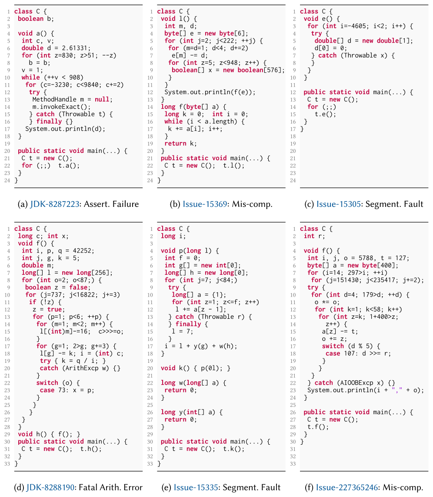
What it shows. A gallery of six cleaned-up example tests, each triggering a different bug: an assertion failure from a missed null check during C1 method inlining, byte-truncation from OpenJ9's Dynamic Loop Transfer losing array type information, a segmentation fault from OpenJ9 traversing an invalid predecessor block while computing live ranges at the scorching tier, a fatal arithmetic crash from incorrect C2-compiled loop code, a null-pointer segfault from a failed OpenJ9 loop-vectorization check, and a wrong-index exception from ART's bounds-check slow path miscomputing an array index.
What to take from it. The diversity of root causes, spanning inlining, loop transformation, register/code generation, vectorization, and de-optimization slow paths, illustrates that JoNM's mutators engage a broad swath of each JIT compiler's internals rather than repeatedly hitting the same code path.
A JIT-triggered performance bug that crashes the process on one OS and merely slows it on another
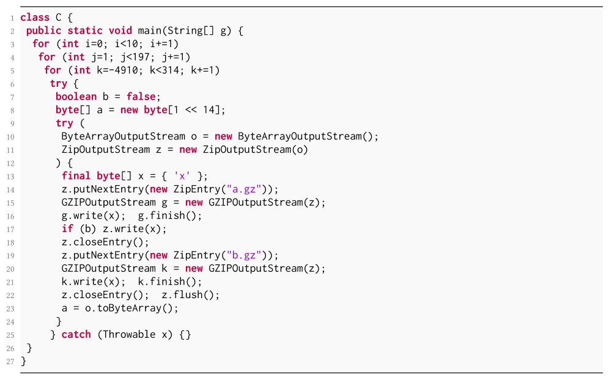
What it shows. JDK-8290360: once Artemis's mutation causes a loop in C.g() to be OSR-compiled by HotSpot's C2 compiler, native memory usage grows unexpectedly during execution. On Ubuntu (16 GiB RAM) the process running the test is killed outright; on Windows (16 GiB RAM) the process survives but runs even slower than pure interpretation.
What to take from it. This is the only performance issue among the 85 reported bugs. HotSpot developers confirmed it as a potential memory leak but later closed it "Won't Fix," reasoning the application was simply allocating faster than the garbage collector could reclaim; the authors argue it should count as a real, user-visible bug because end users should not need to reason about GC speed when writing ordinary Java code.
Apollo's hybrjdon engine matches Fuzzilli's code coverage using markedly fewer samples
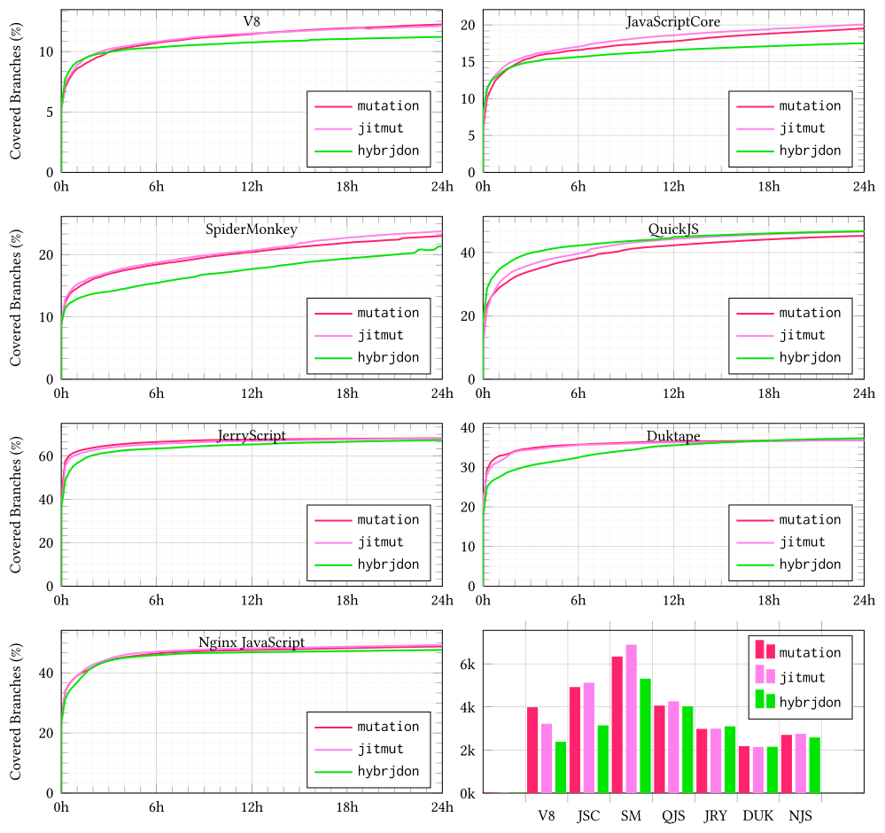
What it shows. 24-hour coverage trends for three fuzz engines, mutation (Fuzzilli default), jitmut, and hybrjdon (Apollo), across all seven engines, plus a sub-figure of the count of "interesting" samples (ones that increased coverage) each engine needed to reach its coverage.
What to take from it. All three engines reach similar final coverage, with less than a 2.55% spread on the three major engines, but hybrjdon needed fewer interesting samples to get there for six of the seven engines: about 83% of mutation's sample count on the three major engines overall, dropping to about 59% for V8 and 63% for JavaScript Core. The paper attributes this efficiency to JIT-ops triggering diverse optimization (or interpreter) paths even though several of Fuzzilli's advanced, coverage-boosting features had to be disabled for semantics preservation.
None of the three fuzz engines crashed any of the three major engines in 24 hours; all three crashed the embeddable engines heavily
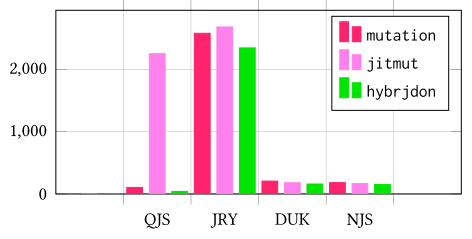
What it shows. Total crash counts per fuzz engine per JavaScript engine over the 24-hour campaign.
What to take from it. V8, JavaScriptCore, and SpiderMonkey produced zero crashes for all three fuzz engines, likely because these engines already run Fuzzilli-based fuzzing continuously in their own build systems. The four embeddable engines (QuickJS, JerryScript, Duktape, Nginx JavaScript) each saw well over 100 crashes from every engine; however over 90% of the crashes in JerryScript and QuickJS could not be reproduced after 100 retries (flaky), while over 95% of those in Duktape and Nginx JavaScript were reproducible. Across all crashes, the Loop Inserter (LI) mutator alone accounted for 58.8%, Statement Wrapper (SW) 23.8%, Method Invocator for JIT (MJ) 17.2%, and Method Invocator for DeOpt (MD) just 0.2% (it requires a call already sitting inside a loop).
hybrjdon does not add meaningful overhead and even boosts the fraction of syntactically/semantically valid samples
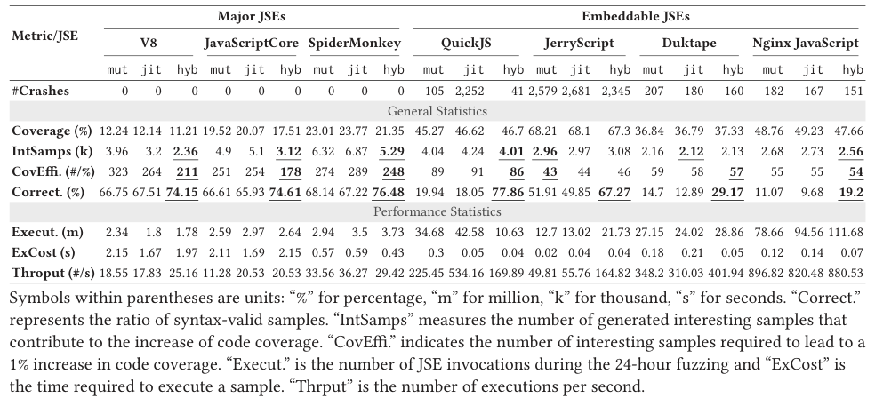
What it shows. Table 5 gives the full per-engine, per-fuzz-engine statistics for the 24-hour campaign: coverage percentage, number of interesting samples, coverage efficiency, the fraction of generated samples that were valid ("Correct."), execution counts, per-sample execution cost, and throughput.
What to take from it. hybrjdon's semantics-preserving mutations raise the valid-sample ratio by over 7% on average compared to the other two engines (for example QuickJS correctness jumps from about 18-20% under mutation/jitmut to about 78% under hybrjdon), and hybrjdon's throughput and execution cost are consistently comparable to or better than the other two engines, with QuickJS the one exception where jitmut's throughput was 2 to 3 times higher, attributed to jitmut's many flaky crashes triggering early returns.
A 7-day field campaign with Apollo found 4 real mis-compilations in JavaScriptCore and SpiderMonkey
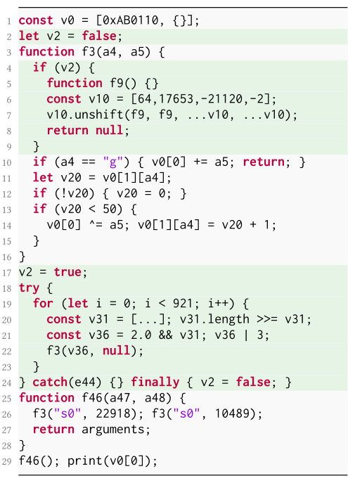
What it shows. Among the four mis-compilations Apollo found during a 7-day, 64-CPU campaign per major engine, one is the SpiderMonkey example shown here: Apollo's inserted loop forces a function to be JIT-compiled by IonMonkey under a speculative assumption about argument types, and the later violation of that assumption should trigger de-optimization without changing the program's checksum output, but SpiderMonkey mis-compiles it, producing a different value.
What to take from it. Three of the four mis-compilations were in JavaScriptCore (two found by SW, one by MJ) and one in SpiderMonkey (found by MJ). The paper reports this is fewer bugs per week than Artemis found on JVMs (roughly 6/week), which it attributes to JoNM's current design not specially accounting for the type-related speculation that dynamically typed JS engines rely on heavily; it proposes type-aware mutators and restricted-subset targets (such as asm.js) as future work.
FAQ
Q·What exactly is a "compilation space," in plain terms?▾
It's the set of every way an LVM could legitimately interleave interpreting and JIT-compiling a given program while it runs, for example compiling method A early but not B, or compiling B then later de-optimizing it back to the interpreter. Each specific way is a "JIT-trace." Since the program's logic doesn't depend on which way the LVM happens to pick, every JIT-trace should produce the same output.
Q·How is this different from ordinary differential testing of JVMs (running the same program on HotSpot vs. OpenJ9)?▾
Classic differential testing needs two or more independent LVM implementations as references and only compares a handful of fixed compilation choices. CSX instead cross-checks many different JIT-traces of the same program on a single LVM, needing no second implementation, and the space it checks is vastly larger (up to 2^n traces for n method calls) than the "interpreted vs. fully compiled" pair typically used before.
Q·What's the practical difference between CSX and JoNM?▾
CSX is the ideal: exhaustively walk the compilation space and cross-check every pair of JIT-traces. JoNM is how the paper actually realizes this without modifying any LVM: by mutating the program's source code with neutral (semantics-preserving) loops and method calls that nudge the LVM onto a different JIT-trace, then comparing the mutant's output against the original.
Q·What do the four mutators (LI, SW, MJ, MD) actually do?▾
Loop Inserter (LI) adds a bare loop to heat a method toward OSR compilation. Statement Wrapper (SW) wraps an existing statement inside a synthesized loop so the statement and loop compile together. Method Invocator for JIT (MJ) inserts extra calls to force a method to be JIT-compiled before a real call runs against it. Method Invocator for DeOpt (MD) inserts mismatched-type calls to force an already-compiled method to de-optimize before a real call runs against it.
Q·How does a mutator guarantee it doesn't change what the program outputs?▾
Synthesized code uses control flags to make extra calls early-return without executing their real body, backs up and restores any variable it reuses, renames all its own variables to avoid collisions, suppresses stdout/stderr while it runs, and swallows any exception it might itself throw. The paper calls mutations meeting these conditions "neutral."
Q·Why does JavaScript (Apollo) need so much more machinery than Java (Artemis)?▾
JavaScript's dynamic typing and first-class functions make it much easier for an "innocuous" mutation to accidentally change behavior, through implicit recursion, implicit type coercion, or prototype pollution. Apollo adds type tracing, static scope/def-use analysis, a bounded checksum variable, restrictions on risky built-ins, and a three-run consistency check before accepting any mutation candidate, defenses Artemis doesn't need for statically typed Java.
Q·Does adding mis-compilation detection hurt Apollo's ability to find ordinary crashes?▾
Not much. Across a 24-hour campaign on seven engines, Apollo's hybrjdon engine reached coverage within about 2.55% of Fuzzilli's default engine on the three major engines (using notably fewer samples) and triggered a broadly similar number of crashes on the four embeddable engines it could crash at all; none of the three fuzz engines crashed the three major engines in 24 hours.
Q·Why did none of the fuzzers crash V8, JavaScriptCore, or SpiderMonkey in 24 hours?▾
The paper attributes this to those three engines already running continuous Fuzzilli-based fuzzing as part of their own build and release process, so many crash-inducing inputs that a 24-hour run would find have likely already been found and fixed.
Q·Why did Apollo find fewer bugs per week than Artemis?▾
The paper suggests JoNM, as currently designed, generalizes across LVMs but doesn't specially exploit the type-related speculation that dynamically typed JavaScript engines rely on heavily for JIT optimization. It proposes type-aware mutators and testing on restricted, performance-oriented subsets of JavaScript (such as asm.js) as future work to close this gap.
Q·What are "uncommon traps" and why haven't they been implemented?▾
An uncommon trap is the mechanism an LVM uses to bail out of compiled code back to the interpreter when a speculative assumption is violated. The paper's current mutators influence compilation mainly through loops and method calls; deliberately engineering uncommon traps to control de-optimization is left as future work, expected to open up even more of the compilation space.
Q·Could this approach be applied beyond JVMs and JavaScript engines?▾
The paper argues yes: CSX and JoNM are stated generally around the universal mechanism of profile-guided speculative compilation, not any one LVM's internals. It names CPython and the .NET runtime as plausible future targets, noting that dynamically typed or type-speculating LVMs will likely need type-aware mutators, as Apollo's experience with JavaScript suggests.
Q·How did JVM developers react to the reported bugs?▾
Positively. The paper quotes a HotSpot Compiler Team member thanking the authors and asking to learn more about the research, and OpenJ9 developers inviting the authors to submit pull requests with their test cases directly. Several bugs were marked blocker or high-severity, and some had gone undetected across four or more major OpenJ9 releases.
Q·What is the role of JavaFuzzer and Fuzzilli in this work?▾
They are the seed generators JoNM mutates, not JoNM itself. JavaFuzzer is a random Java program generator the authors chose because its outputs reduce well with Perses and C-Reduce; Fuzzilli is a coverage-guided JavaScript fuzzer the authors extended (as Apollo) by adding a JoNM-based mutation engine (hybrjdon) alongside its existing generation and mutation engines.